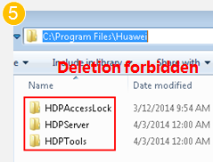
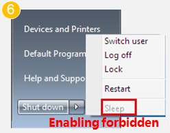

| Home > Forbidden operation > Forbidden operation (2) |
| Online Help | =======WI Onlinehelp | >>>>>>> 7cf7c9997bcec953e9a329c30100afadb59cc3b7
| Forbidden operation (1) Forbidden operation (2) |
|
5. Delete files or folders from C:\Program Files\Huawei. 6. Enable hibernation on VMs. VM hibernation is disabled by default. 7. Run scripts or commands for changing routes, such as route DELETE *. 8. Modify the configuration file of the HDP client (Access Agent). 9. Delete the following ports from Windows firewall exception options: 28511\28512\28521\28522。 10. Stop the following processes in the Task Manager: 11. Use Supper Rabbit or Wopti Utilities to clear or optimize the registry. 12. Enable software or tools, such as the IPsec, which can 13. (Critical operation) Install a customized screensaver that provides complex transformation functions. This operation consumes a lot of system resources and prolongs the access to the VM desktop after the screensaver is activated. |
  |